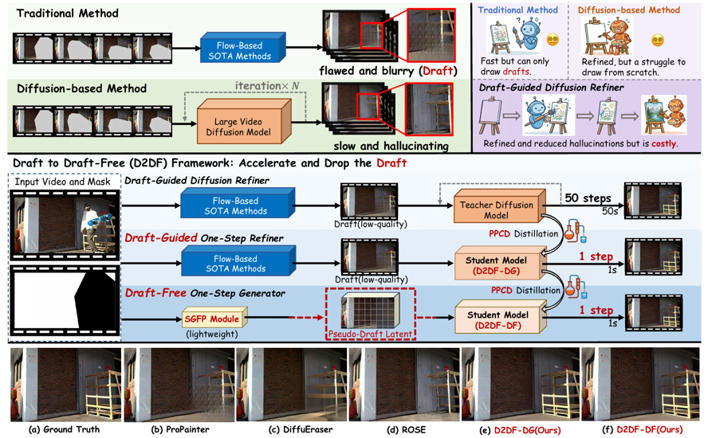
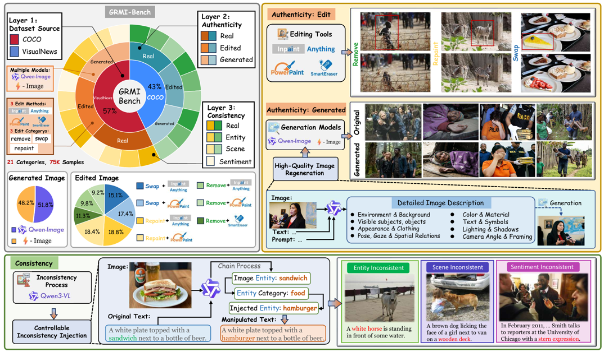

About Me
Hi! I am Zizhao Chen, currently pursuing a Master's degree in Artificial Intelligence at Xi'an Jiaotong University (expected graduation in June 2027). Previously, I completed my undergraduate studies in the IEEE Pilot Class at Shanghai Jiao Tong University, earning a dual bachelor's degree (B.E. in Automation & Zhiyuan Honors Degree).
My research interests primarily focus on Computer Vision, Multimodal Large Language Models (MLLMs), and Domain-Specific (Social Media) Large Language Models.
I will be graduating in June 2027 and am currently seeking internship and job opportunities in the AI field. If you are interested in learning more about me, please feel free to contact me via email or phone. Thanks!!!
Education
Xi'an Jiaotong University (XJTU)
Master of Science in Artificial Intelligence
Shanghai Jiao Tong University (SJTU)
Dual B.S. in Automation & Zhiyuan Honors Degree · IEEE Pilot Class
Zhiyuan Honors Scholarship (4 times), Freshman Scholarship, etc.
Publications & Research
Bridging Pixels and Words: Mask-Aware Local Semantic Fusion for Multimodal Media Verification

Zizhao Chen, Ping Wei, Ziyang Ren, Huan Li, Xiangru Yin. Proceedings of the IEEE/CVF Conference on Computer Vision and Pattern Recognition (CVPR), 2026.
- MaLSF shifts multimodal verification from passive fusion to active, bidirectional cross-referencing by using "mask-label pairs" as semantic anchors. Through its BCV and HSA modules, the framework achieves state-of-the-art performance in media manipulation and fake news detection.
AMFD: Distillation via Adaptive Multimodal Fusion for Multispectral Pedestrian Detection

Zizhao Chen, Yeqiang Qian, Xiaoxiao Yang, Chunxiang Wang, Ming Yang. IEEE Transactions on Multimedia (TMM), 2025.
- Achieve effective feature fusion and semantic knowledge distillation via Fusion Distillation Architecture and the Modal Extraction Alignment (MEA) module. Construct and open-source the SMOD dataset to fill the gap in dense pedestrian and complex illumination scenarios.
From Draft to Draft-Free: One-Step Video Object Removal via Privileged Distillation and Fast Planting

Zizhao Chen, Ping Wei, Guang Dai, Jingdong Wang, Mengmeng Wang.
- D2DF utilizes Prior-Privileged Consistency Distillation (PPCD) to distill multi-step diffusion into an efficient one-step refiner, using truth-injected "golden targets" for stable generation. By incorporating the Self-Guided Fast Planting (SGFP) module, it generates latent pseudo-drafts to enable fully autonomous, draft-free video object removal at exceptional speeds.
GRMI: Grounding and Reasoning for Fine-Grained Multimodal Integrity Assessment.

Bole Wang*, Zizhao Chen*, Huan Li, Kai Mao, Ping Wei. ("*" indicates co-author)
We defined the multimodal integrity and related task GRMI, proposed GRMI-Bench, and developed MINT, an end-to-end multimodal segmentation LLM. We successfully completed the task in its full scope. MINT achieves SOTA performance and comprehensively outperforms general large models (e.g., Gemini-3-Pro) and task-specific models.